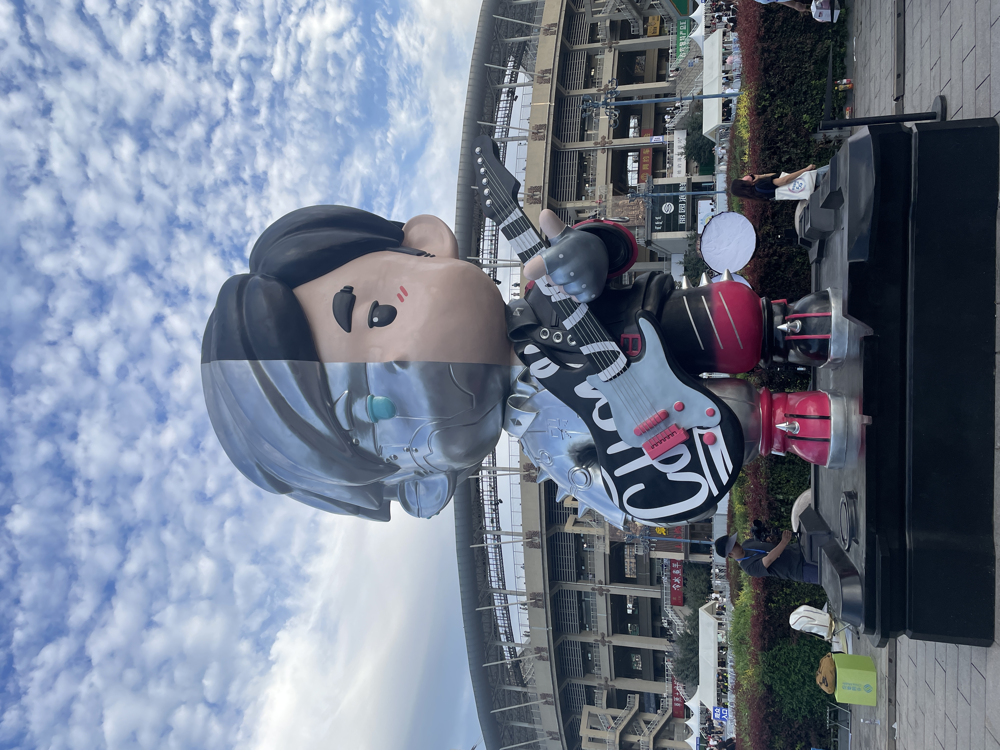
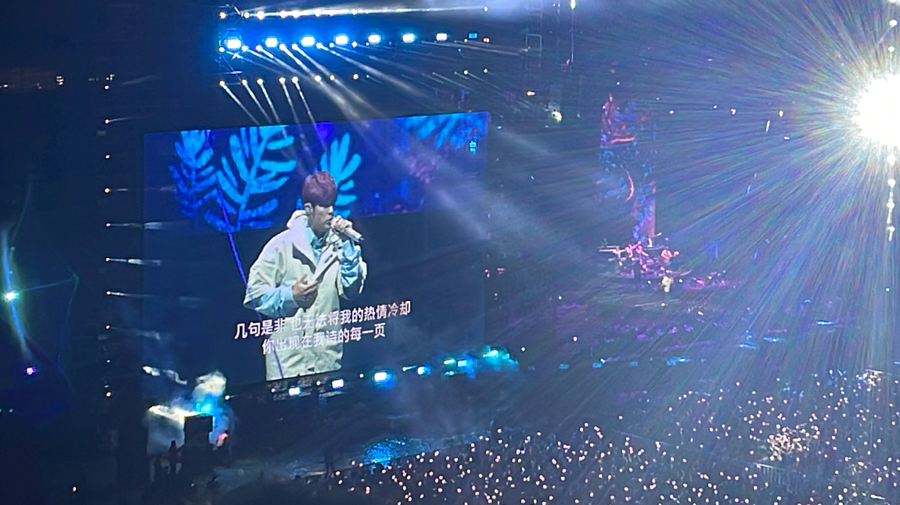
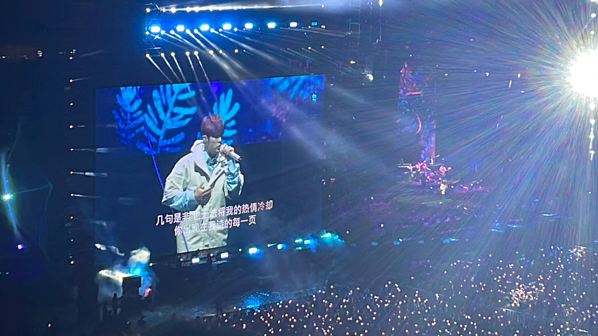

呼和浩特Hohhot
一直不知道怎么开头，就先这样吧。
和朋友说自己像是有“幼儿园综合征”，在春游前一天会兴奋的睡不着。
仿佛是突然就正式地决定了今年一定要去一次周杰伦的演唱会，然后严肃地在闲鱼上找卖家，很快地买了票，兴致勃勃地计划行程。我给好朋友说：人在接近幸福的时候最幸福。果然是这样。整个暑假都几乎是短裤＋拖鞋的我开始为演唱会准备自认为得体的衣服，同时拍照的时候能更上镜一些，我也重新坚持了跑步，强迫自己多跑一圈又一圈。同时也开始听在歌单中的不熟的那些歌。
我买的是18号的票，计划的是17号晚上的硬座，18号早上到，19号下午的硬座回西安。
就这样，the very day 终于到了。在从西安出发前，还和小坤吃了兰湘子。在一晚上的硬座上看了小坤推荐的《阅后即焚》，实在太困了也就迷迷糊糊地睡了一会儿。早上八点就到了呼市，按照看好的攻略，直奔宽巷子去吃早餐。
早餐在吃烧麦的时候，和一个老哥聊了起来，他从北京骑摩托来，看了17号的那场，吃完饭就继续骑行去山西。吃完早饭就骑共享电车去了大召寺。没进寺庙，去寺庙外的塞上老街走了一圈，买了奶皮。前几口还是很惊艳的，但对一个人来说，还是有点腻。
之后就骑电车回了青旅。睡了一觉，兴致勃勃地出发去体育馆。让其他人帮我用拍立得拍了照。然后就进场了。
 

给好朋友说，感觉一切就像梦一样，若是在几个月之前，根本不能想象能见到这么喜欢的歌手（这感觉有点像21年第一次去看接球比赛一样，梦想照进了现实一般）。
不知道是不是因为自己在网上已经看了很多遍别人的录像，或者是因为在听到自己很喜欢的歌时忙着录像，似乎我并没有像自己预期的那样很感动。我不是很容易哭，全程仅仅是在《半兽人》开场的时候眼眶湿润了一下，再就挤不出眼泪了。但似乎其实并不影响体验感。无悔了！

第二天在青旅认识了两位同样从外省来呼市看演唱会的大学生。当即一拍即合，我改签火车到了晚上十点半，先去场馆外听一遍再去火车站。白天便三人去了内蒙古博物院和宽巷子吃烤羊肉串，之后去场外听到《告白气球》，飞奔到地铁站踏上返程火车。

忽然想起一段自己一直读不下去的微博文章，讲的大概是诸如青年啊、勇敢啊这些。但其实我不想把自己这次旅行和所谓的“年轻/义无反顾”联系起来，那些抖音上的说走就走的旅行、拍的极尽自由的vlog在我看来多少有点虚假。本来想以“odyssey”命名这篇博客，但感觉这只是一次平淡的旅程，远不是所谓的诸如“魔戒之旅”或是“马里奥大冒险”那般一段伟大的冒险。
anyway，写到这里似乎是有点悲观了，但完全不是这样的。就像我最喜欢的歌词“我们的故事像梦一样~~”，梦想照进了现实。